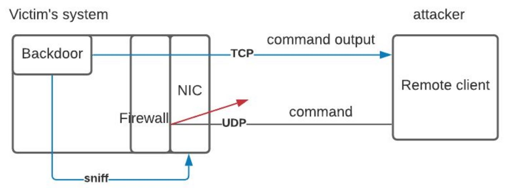
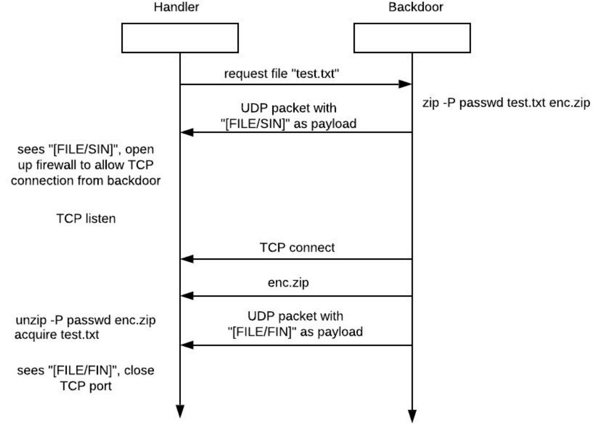

Objective
Design and implement a complete covert application that will allow a user to access a port (that is otherwise closed) on a firewall, communicate with a "disguised" backdoor application. The backdoor application will accept commands and execute them; the results of the command execution will be sent back to the remote client application
Constraints
- the user must be able to select from a number of protocols (UDP, TCP, etc) and ports to carry out the penetration and exfiltration
- A README that provides a detailed user guide as part of the project submission
Approach
The application consists of three components - backdoor, handler and keylogger. We will use the c library libpcap to implement both backdoor and handler. To issue a command to the backdoor, the handler will send a UDP packet to the backdoor. The payload of that packet has a predefined keyword followed by a ciphertext of the actual command to be executed on the backdoor. The key used to create the ciphertext is shared with the backdoor program.
Network traffic capturing happens before the firewall, therefor, the backdoor will still be able to sniff the incoming packet even if there's a blocking rule in place. When the backdoor receives the UDP packet, it will check the keyword in the payload to varify that the packet is indeed from the remote client. Next, it will proceed to decrypt the encrypted command, execute the command, and send the output of the command back to the handler on the same udp port. The figures below show a high level overview of the communication process.
 overview of the backdoor communication processThe file exfiltration process will be run on a separate TCP channel. Before the process begins, the backdoor will first send a UDP packet with a predefined flag to the handler. When the handler receives the packet and verifies the flag, it will open up a firewall rule to allow the backdoor to connect back, and send back the requested file. The following system diagram illustrates the file exfiltration process.
 file exfiltration processSource code
The project source code can be found here .